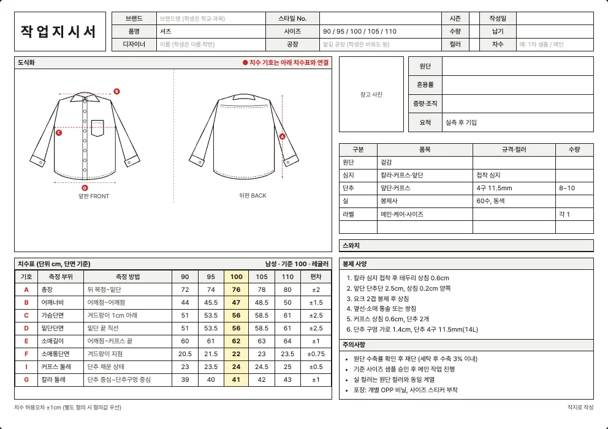

최종 수정 2026년 10월 10일 · 읽는 시간 약 4분
셔츠 양식 내려받기
남성 셔츠와 여성 블라우스에 쓰는 엑셀 작업지시서 양식입니다. 셔츠는 티셔츠와 달리 칼라, 칼라밴드, 커프스, 요크, 앞단 같은 부위가 많아서 치수표에 칼라 둘레와 커프스 둘레가 들어 있고, 심지와 단추 규격이 부자재 표에 채워져 있습니다.
| 사이즈 체계 | 엑셀 파일 (.xlsx) |
|---|---|
| 남성 사이즈 (80~110) | 남성 사이즈 (80~110) |
| 여성 사이즈 (44~88) | 여성 사이즈 (44~88) |
| 영문 양식 (해외 공장용) | 남성 · 영문 여성 · 영문 |

셔츠 작업지시서에서 꼭 챙길 것
- 칼라·커프스 둘레: 칼라 둘레는 단추를 채운 상태에서 칼라 밴드의 안쪽 길이로 재고, 커프스 둘레는 단추를 채운 상태로 잽니다. 재는 방법을 같이 적어야 사이즈가 틀어지지 않습니다.
- 접착 심지: 칼라·커프스·앞단에 어떤 심지를 붙이는지에 따라 셔츠의 형태와 세탁 뒤 모양이 크게 달라집니다. 심지 종류와 접착 위치를 부자재 표에 적으세요.
- 단추 규격과 위치: 단추 크기(예: 4구 11.5mm), 개수, 첫 단추 위치와 간격을 적습니다. 도식화에 단추 위치를 표시하면 더 정확합니다. 여성 블라우스는 앞 여밈 방향(오른쪽·왼쪽)이 남성과 반대라는 점도 적어 두세요.
- 요크·소매 트임: 요크를 2겹으로 봉제하는지, 소매 트임(플래킷) 처리를 어떻게 하는지 봉제 사양에 적습니다.
- 무늬 맞춤: 스트라이프나 체크 원단이면 앞단·포켓·소매의 무늬를 맞출지 여부와 요척 여유를 함께 정해야 합니다.
치수표 (양식에 들어 있는 기준값)
이 양식의 치수표는 8곳(총장, 어깨너비, 가슴단면, 밑단단면, 소매길이, 소매통단면, 커프스 둘레, 칼라 둘레)입니다. 기준(샘플) 사이즈는 100(남성)과 66(여성)이고, 단위는 cm이며 단면(납작하게 놓고 가로로 잰 길이) 기준입니다.
남성 사이즈 (80~110)
| 기호 | 측정 부위 | 측정 방법 | 90 | 95 | 100 | 105 | 110 | 편차 |
|---|---|---|---|---|---|---|---|---|
| A | 총장 | 뒤 목점~밑단 | 72 | 74 | 76 | 78 | 80 | ±2 |
| B | 어깨너비 | 어깨점~어깨점 | 44 | 45.5 | 47 | 48.5 | 50 | ±1.5 |
| C | 가슴단면 | 겨드랑이 1cm 아래 | 51 | 53.5 | 56 | 58.5 | 61 | ±2.5 |
| D | 밑단단면 | 밑단 끝 직선 | 51 | 53.5 | 56 | 58.5 | 61 | ±2.5 |
| E | 소매길이 | 어깨점~커프스 끝 | 60 | 61 | 62 | 63 | 64 | ±1 |
| F | 소매통단면 | 겨드랑이 지점 | 20.5 | 21.5 | 22 | 23 | 23.5 | ±0.75 |
| I | 커프스 둘레 | 단추 채운 상태 | 23 | 23.5 | 24 | 24.5 | 25 | ±0.5 |
| G | 칼라 둘레 | 단추 중심~단추구멍 중심 | 39 | 40 | 41 | 42 | 43 | ±1 |
여성 사이즈 (44~88)
| 기호 | 측정 부위 | 측정 방법 | 44 | 55 | 66 | 77 | 88 | 편차 |
|---|---|---|---|---|---|---|---|---|
| A | 총장 | 뒤 목점~밑단 | 61 | 62.5 | 64 | 65.5 | 67 | ±1.5 |
| B | 어깨너비 | 어깨점~어깨점 | 36 | 37 | 38 | 39 | 40 | ±1 |
| C | 가슴단면 | 겨드랑이 1cm 아래 | 44 | 46.5 | 49 | 51.5 | 54 | ±2.5 |
| D | 밑단단면 | 밑단 끝 직선 | 43 | 45.5 | 48 | 50.5 | 53 | ±2.5 |
| E | 소매길이 | 어깨점~커프스 끝 | 55 | 56 | 57 | 58 | 59 | ±1 |
| F | 소매통단면 | 겨드랑이 지점 | 16.5 | 17.5 | 18 | 19 | 19.5 | ±0.75 |
| I | 커프스 둘레 | 단추 채운 상태 | 20 | 20.5 | 21 | 21.5 | 22 | ±0.5 |
| G | 칼라 둘레 | 단추 중심~단추구멍 중심 | 34 | 35 | 36 | 37 | 38 | ±1 |
‘측정 방법’ 칸은 어디에서 어디까지 재는지를 적은 것입니다. 공장과 재는 방법이 다르면 같은 숫자도 다른 옷이 됩니다. 일반적인 측정 위치는 치수 재는 법에 정리했습니다.
기본 부자재와 봉제 사양
| 부자재 | 기본 규격(예시) |
|---|---|
| 겉감 | — |
| 칼라·커프스·앞단 | 접착 심지 |
| 앞단·커프스 | 4구 11.5mm |
| 봉제사 | 60수, 동색 |
| 메인·케어·사이즈 | — |
양식에는 아래 봉제 사양이 예시로 들어 있습니다. 내 옷에 맞게 고쳐 쓰세요.
- 칼라 심지 접착 후 테두리 상침 0.6cm
- 앞단 단추단 2.5cm, 상침 0.2cm 양쪽
- 요크 2겹 봉제 후 상침
- 옆선·소매 통솔 또는 쌍침
- 커프스 상침 0.6cm, 단추 2개
- 단추 구멍 가로 1.4cm, 단추 4구 11.5mm(14L)
원단 예시
셔츠에 많이 쓰는 원단입니다.
| 원단 | 혼용률(예시) | 중량·조직(예시) |
|---|---|---|
| 옥스포드 | 면 100% | 옥스포드 평직 |
| 포플린 | 면 100% | 포플린 평직 |
| 린넨 | 린넨 100% | 평직 (세탁 수축 주의) |
실제 혼용률과 중량은 구입한 원단의 스와치 라벨이나 공급처 자료로 확인해서 적어야 합니다. 원단 선택은 원단 고르는 법, 요척과 원가는 요척과 원가 계산을 참고하세요.
엑셀 양식과 작지 도구
엑셀 양식은 직접 쓰기 편하지만, 셔츠의 소분류(셔츠·블라우스)와 디테일에 맞는 도식화를 바꾸려면 그림을 직접 편집해야 합니다. 작지 도구에서는 소분류와 디테일을 고르면 도식화와 치수표가 자동으로 채워지고, ‘엑셀로 저장’으로 내 옷 기준의 엑셀을 받을 수 있습니다.
자주 묻는 질문
셔츠 작업지시서에는 어떤 치수를 적나요?
8곳(총장, 어깨너비, 가슴단면, 밑단단면, 소매길이, 소매통단면, 커프스 둘레, 칼라 둘레)입니다. 소매 트임 길이나 포켓 위치처럼 셔츠에서 자주 필요한 치수는 도식화 옆에 따로 적어 두세요.
블라우스도 이 양식으로 쓸 수 있나요?
쓸 수 있습니다. 여성 사이즈(44~88)를 고르면 여성 기준 치수가 들어 있고, 스타일에 따라 칼라가 없는 경우에는 칼라 행을 지우거나 목 처리 방식을 적으면 됩니다.
옥스포드와 포플린은 뭐가 다른가요?
옥스포드는 조직이 굵어 두툼하고 캐주얼한 느낌이고, 포플린은 조직이 촘촘해 매끈하고 얇습니다. 중량과 조직을 원단 칸에 함께 적어야 공장이 바늘과 심지를 정합니다.
다른 품목 양식
내 옷에 맞는 도식화까지 한 번에
소분류와 디테일을 고르면 도식화·치수표가 자동으로 채워집니다.